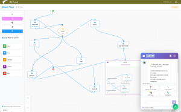

IACF: The Next-Generation Intelligent Application Configuration Framework
Built as an intelligent, configurable, and AI-powered application platform, IACF enables organizations to create, extend, and orchestrate enterprise solutions without heavyweight coding efforts. It transforms the traditional MES/ERP extension model by providing a unified framework that combines low-code configurability, enterprise-grade backend services, a modern UI architecture, and a powerful suite of embedded AI assistants.
A Platform Designed for Modern Manufacturing
IACF delivers the flexibility manufacturers need to evolve rapidly while maintaining operational discipline. It serves as the backbone for building production solutions, quality workflows, dispatching engines, production UIs, BI dashboards, logistics orchestration, and business process governance—all from one highly modular infrastructure.
Key Highlights
-
Unified Application Framework
Integrates business rules, workflows, UI definitions, data services, messaging, event handling, and connectors into a common runtime. -
Configurable Business Logic Layer
Builds dynamic business rules, BPM flows, event processing, triggers, and workflow definitions without deep custom code. -
Enterprise-Class Architecture
Built on Go microservices, MySQL/PostgreSQL, MongoDB document storage, SignalR real-time messaging, and a modern TypeScript + React UI. -
Consistent, rapid adaptability
Accelerates solution changes from months to days.
AI at the Heart of the IACF Platform
The latest evolution of IACF introduces an integrated AI assistant suite, embedded directly into the foundation of the platform. Unlike bolt-on solutions, these capabilities are part of the core runtime—ready to use out of the box.
AI Capabilities Integrated Deeply Into the Platform

AI assistant1. AI Bot Embedded in the System
An intelligent conversational layer that:
-
Answers user questions
-
Understands solution configurations
-
Interprets data structures, flows, and business objects
-
Provides contextual help based on your deployed environment
This enables self-service understanding of complex manufacturing applications.
2. AI Assistant for BI & Analytics
Using natural language, users can:
-
Generate BI reports
-
Explore patterns
-
Request insights (“Show me OEE trends for last quarter”, “Give root causes for downtime spikes”)
-
Build dashboards automatically
This delivers dynamic insight without needing a BI developer.
3. AI Assistant for BPM / Page / View Definition
The assistant understands your processes and can:
-
Create BPM flows
-
Define page structures
-
Suggest UI views based on workflow behavior
-
Convert process descriptions into working screen definitions
It shortens solution-building from hours to minutes.
4. AI Assistant for Workflow & Business Logic Configuration
You can describe your business rule or process in natural language:
“When the operator completes an inspection, route the material for rework if any defect exceeds threshold.”
The assistant converts that into workflow steps, system triggers, and logic execution paths.
5. AI Assistant for Business Logic & UI Design from Ideation
Visualize your idea verbally:
“Draw a receiving inspection screen with defect entry, image capture, and pass/fail logic.”
The assistant:
-
Generates a conceptual diagram
-
Converts it to business logic
-
Creates the UI definition compatible with IACF view configuration
6. AI/ML Quality Prediction & Defect Detection
Using machine learning models embedded into the framework, IACF can:
-
Detect quality issues
-
Identify product/material anomalies
-
Support predictive quality
-
Configure automated QC rules
-
This extends the platform into real-time, intelligence-driven decision-making.